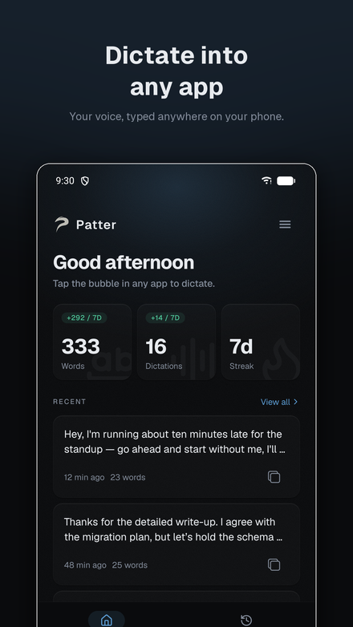
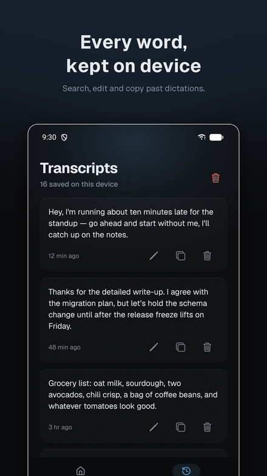
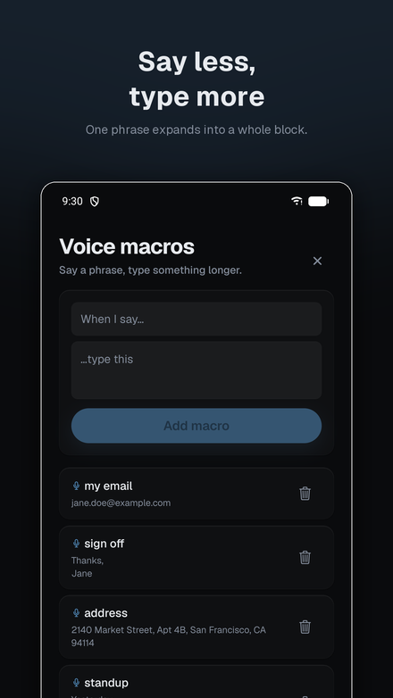

Android
Patter for Android is a companion app, not a remote control — it runs its own Whisper or Parakeet model on the phone. Tap the floating bubble in any app, speak, and the text lands in whatever field you're in. No account, no server, works on a plane.



Patter.apk and tap it. Allow installing from unknown sources if asked.Step 3 is the one everyone gets stuck on. Android hides the accessibility toggle for apps installed outside an app store, so without it step 4 is greyed out and Patter looks broken.
Patter types for you, which on Android means using the accessibility service — the same mechanism screen readers use. That's a powerful permission, so the system deliberately makes it awkward to grant for sideloaded apps. Patter only reads the text field you're focused on, and only to insert what you dictated.
If you have a computer handy, adb install -i com.android.vending -r Patter.apk
skips steps 3 and 4 entirely.
Android 7.0+ · 64-bit ARM · ~34 MB